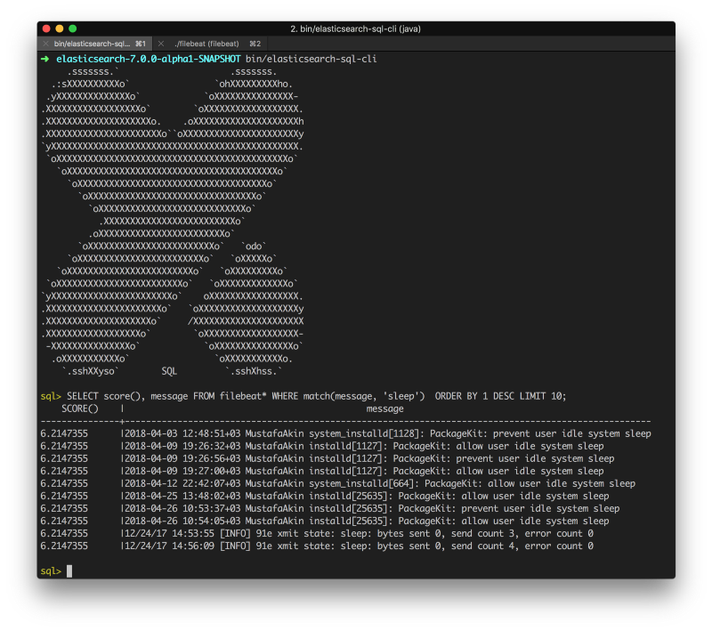

Previewing Elasticsearch 6.3 SQL Feature
Although the decision to include X-Pack sparked some confusion and disgruntle in some people due to having non Apache licensed code being present in the repo and the distrubitions; they are easily removable if any of them is a concern to you.
SQL support was announced in ElasticON and there is a comprehensive presentation by Costin Leau. I was pretty excited about the support, because we use Elasticsearch for storing metrics and logs and it does the agggregations pretty fast. Even on a single node cluster with proper index templates and settings tailored, it can do very large aggregations, even aggregations with inner aggregations very fast, usually under 1 second. Imagine having thousands of customers and hundred millions of records and getting an average of something is done under a second. Of course, Elasticsearch is not a silver bullet for everything, you have to organize your data accordingly, which is a broad and interesting topic, however I will not be focusing on data modeling in this blog post.
Query syntax of the Elasticsearch is very powerful, however it is hard to write, especially for beginners. Being able to write SQL will reduce bariers for who are afraid of 100 lines of JSONs. SQL support is supported to come with 6.3, but it is not released yet. However, I was able to find the lins of the snapshot builds. (Of course you can build from source, but it is a little long and requires Java 10)
Note that although the releases are named 7.0.0-alpha1-SNAPSHOT, they are actually not tagged as 6.x, not really version 7.0. I have also included Metricbeat to generate sample data from my computer. You can also generate similar links for other beat variants such as Filebeat.
After setting up the components, I just opened the Kibana because I like its DevTools which allows wiriting REST requests easier and can autocomplete very well. I just tried the following:
GET _xpack/sql
{
"query": "SELECT * FROM metricbeat*"
}
And it returned the following error:
Trying to retrieve too many docvalue_fields. Must be less than or equal to: [100] but was [1307]. This limit can be set by changing the [index.max_docvalue_fields_search] index level setting
Docvalues are Elasticsearch’s data structure for storing the original indexed data in a columnar way. It seems that SQL extension blocks getting too many of them to avoid performance problems, but it can be easily overriden. The real question we should be asking why there are 1307 columns? Because as Metricbeat registers the index mapping, it also stores metadata about all available columns, such as vsphere.virtualmachine.custom_fields even though there is no value with that field.
So, after a quick review of what actually Metricbeat supports, I try the following query:
GET _xpack/sql
{
"query": "SELECT avg(system.process.memory.rss.bytes) FROM metricbeat*"
}
I just love it does not require backticks (which I hate to type with Turkish keyboard) with compound objects (fields names with dots), and it returns an easily parseable structured JSON with metadata of columns and the rows seperated:
{
"columns": [
{
"name": "AVG(system.process.memory.rss.bytes)",
"type": "long"
}
],
"rows": [
[
612974971.7615894
]
]
}
The endpoint can also return a table format if you append ?format=txt to end.
GET _xpack/sql?format=txt
{
"query": "SELECT avg(system.process.memory.rss.bytes) FROM metricbeat*"
}
AVG(system.process.memory.rss.bytes)
------------------------------------
6.129749717615894E8
To try more interesting queries, I have also tried aggregations, which is to get the average memory for process:
GET _xpack/sql?format=txt
{
"query": "SELECT avg(system.process.memory.rss.bytes), system.process.name FROM metricbeat* WHERE match(beat.hostname, 'MustafaAkin.local') GROUP BY system.process.name LIMIT 100"
}
And it returns the following:
AVG(system.process.memory.rss.bytes)|system.process.name
------------------------------------+-------------------
3.3009664E7 |CalendarAgent
3.3805892963265306E8 |Google Chrome
2.754828747755102E8 |Google Chrome H
2.34139648E8 |Slack Helper
1.3305953523809524E8 |Spotify
8.14535317979798E8 |Spotify Helper
1.3287424E7 |XprotectService
3.394526625185185E8 |goland
1.9761845169230768E8 |iTerm2
1.0084054522828283E9 |idea
1.5776596712727273E9 |java
2.3113728E7 |metricbeat
2.38579712E8 |node
1.644544E7 |quicklookd
6209536.0 |zsh
As looking at the directory of the Elasticsearch, I also see a command line SQL client for ad-hoc queries. There is also a JDBC driver to integrate it directly in Java programs or the data visualization tools.
An example query with Filebeat logs where message field is used in text matcing searches for keyword sleep:

There is also another endpoint for converting the SQL query to a regular Elasticsearch query. It can be useful if you would like to debug it. For comparison, one of the above queries results in the following long form with Translate API:
GET _xpack/sql/translate
{
"query": "SELECT avg(system.process.memory.rss.bytes), system.process.name FROM metricbeat* WHERE match(beat.hostname, 'MustafaAkin.local') GROUP BY system.process.name LIMIT 100"
}
{
"size": 0,
"query": {
"match": {
"beat.hostname": {
"query": "MustafaAkin.local",
"operator": "OR",
"prefix_length": 0,
"max_expansions": 50,
"fuzzy_transpositions": true,
"lenient": false,
"zero_terms_query": "NONE",
"auto_generate_synonyms_phrase_query": true,
"boost": 1
}
}
},
"_source": false,
"stored_fields": "_none_",
"aggregations": {
"groupby": {
"composite": {
"size": 100,
"sources": [
{
"80529": {
"terms": {
"field": "system.process.name",
"order": "asc"
}
}
}
]
},
"aggregations": {
"80696": {
"avg": {
"field": "system.process.memory.rss.bytes"
}
}
}
}
}
}
Finally, you can also include additional filters with Elasticsearch DSL on top of your SQL queries which can be useful to add additional terms that SQL syntax does not support or you do not want to modify the SQL:
POST /_xpack/sql?format=txt
{
"query": "SELECT * FROM library ORDER BY page_count DESC",
"filter": {
"range": {
"page_count": {
"gte" : 100,
"lte" : 200
}
}
},
"fetch_size": 5
}
The documentation of SQL features of Elasticsearch can be found the documentation at the master branch. Although the SQL support is here, there are some missing parts as well. For the time of writing, I could not find the string manipulation functions or ordering when GROUP BY is used. However the SQL feature is currently a work in progress but holds much promise. It will probably never be a complete SQL solution, which can do cross index joins that can replace your RDBMS, but Elasticsearch is not designed for that anyway. This SQL addition to regular Elasticsearch DSL is simply a means to reduce barriers for some people to write queries faster.